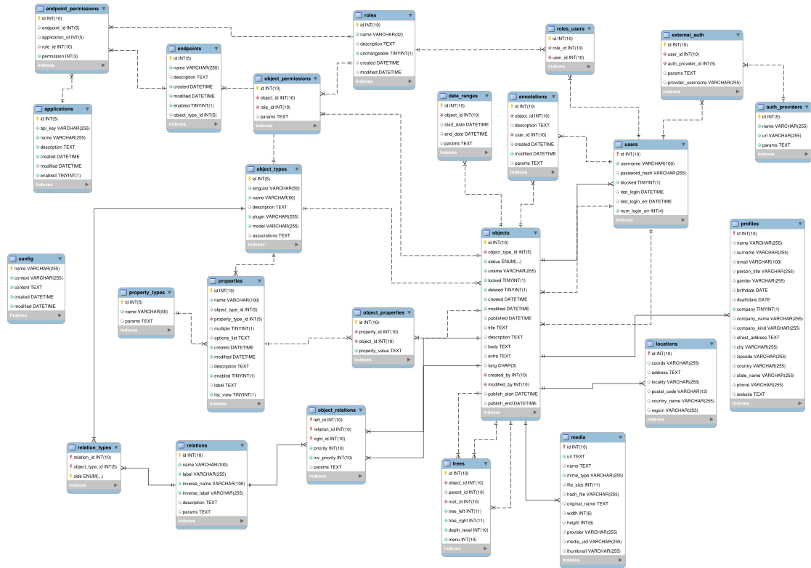

Database¶
Schema¶
BEdita4 uses CakePHP Migrations plugin for schema creation and update.
Schema migration files are located in plugins/BEdita/Core/config/Migrations and they are basically PHP files that describe
database schema evolution.
With simple shell commands you can check migration status and perform schema update. See also db_admin shell command to perform schema check and initialization.
A MySQL schema file, provided for convenience only, is available in plugins/BEdita/Core/config/schema/be4-schema-mysql.sql.
It’s not used anywhere in BEdita but it may be used as a quick reference.
ER Diagram¶
A simple ER diagram is displayed here to give you a glimpse of BEdita4 core schema. Don’t use it as a reference though: we will keep an updated version of this diagram, but some tables or fields may still be missing.
